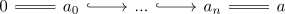
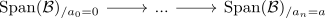
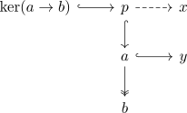
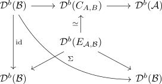
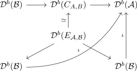
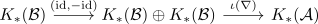

quillens devisage
Proposition
Let $\mathcal{B} \hookrightarrow \mathcal{A}$ be an abelian full subcategory which is closed under subobjects and quotient objects. Then the induced map
is an equivalence
Proof
a)
we prove that $\mathrm{Span}(B) \rightarrow \mathrm{Span}(A)$ is a coinitial infinity functor. We need to show that
is contractible for $a \in \mathrm{Span}(\mathcal{A})$ (which by abuse of notation we may also consider as object in $\mathcal{C}$)
by assumption of fully abelian subcategory we may find a sequence

In particular we may apply the span category functor to get

It suffices to show that for all $x \hookrightarrow y$ with $y/x \in \mathcal{B}$
is an equivalence
consider the full subcategory
consisting of spans $b \twoheadleftarrow a \hookrightarrow y$ such that

Note that there exists a unique factorization, since $x \hookrightarrow y$ is a monomorphism
b)
extension of
Consider the
semi-orthogonal decomposition
diagram
consider
under this composition we get

Now

Under this we get a fiber sequence on connective k-spaces

use:
which shows the isomorphism